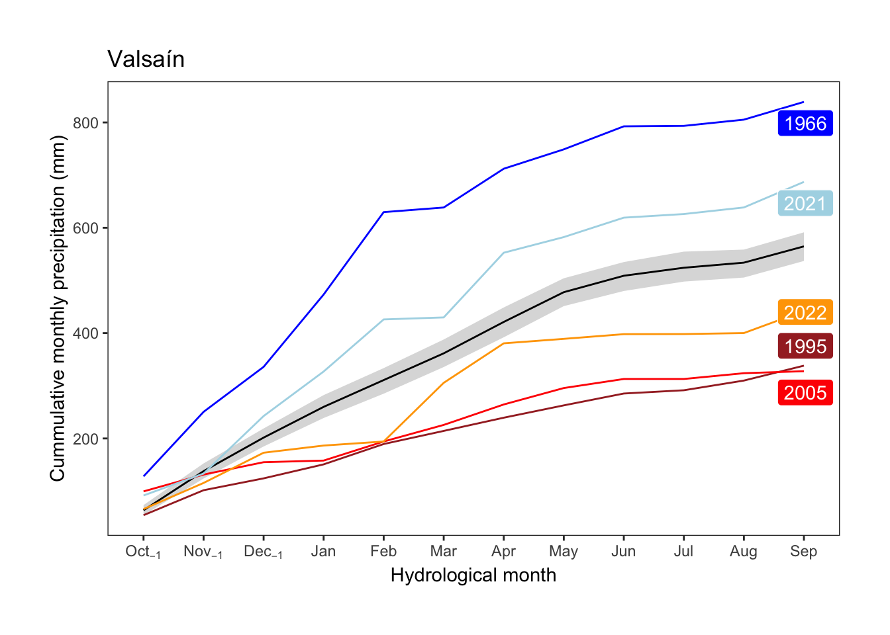

library(tidyverse)
library(infer)
library(ggrepel)
library(plotly)
prec_valde <- read_csv("data/climate/clim_daily_corr_valdemaqueda.csv") |>
filter(variable == "P77") |>
dplyr::select(date, doy = DOY, value, name) |>
filter(!is.na(value))Precipitation
Aim
- To explore the cummulative precipitation profile (hydrological year) of each of the sites.
daily_valsain <- read_delim("data/climate/ponton_daily.csv", delim = ";") |>
mutate(date = as.Date(Date, format = "%d/%m/%Y")) |>
dplyr::select(date, yday = Day, doy = DOY, year = Year, month = Month, prec = PREC)
monthly_valsain <- daily_valsain |>
mutate(month_names = strftime(date, '%b')) |>
group_by(year,month, month_names) |>
summarise(prec = sum(prec)) |>
mutate(
hydro_month = case_when(
month >= 10 ~ (month - 9),
TRUE ~ month + 3),
hydro_year = case_when(
month >= 10 ~ (year + 1),
TRUE ~ year),
name_m = case_when(
month >= 10 ~ paste0(month_names, "[-1]"),
TRUE ~ month_names
))
cum_valsain <- monthly_valsain |>
ungroup() |>
dplyr::select(prec, hydro_month, hydro_year, name_m) |>
mutate(hydro_date = paste(hydro_year, sprintf("%02d", hydro_month),
"01", sep = "-")) |>
arrange(hydro_year, hydro_month) |>
group_by(hydro_year) |>
mutate(cum_prec = cumsum(prec)) |>
ungroup() |>
mutate(hydro_month_sort = fct_relevel(name_m, "Oct[-1]","Nov[-1]","Dec[-1]",
"Jan","Feb","Mar","Apr","May",
"Jun","Jul","Aug","Sep"))
cum_average <- cum_valsain |>
group_by(hydro_month, name_m) |>
summarise(mean = mean(cum_prec, na.rm = TRUE),
sd = sd(cum_prec, na.rm = TRUE),
se = sd/sqrt(length(cum_prec)))
compute_bootstrap_ci <- function(data, var, n_boots = 1000, conf_level = 0.95) {
# Perform bootstrapping
boot_results <- data |>
specify(response = !!sym(var)) |>
generate(reps = n_boots, type = "bootstrap") |>
calculate(stat = "mean")
# Compute the confidence interval
ci <- boot_results |>
get_confidence_interval(level = conf_level, type = "percentile")
return(ci)
}
# Group by hydro_month_sort and calculate the mean with bootstrap CI
bootstrap_results <- cum_valsain |>
group_by(hydro_month_sort) |>
summarize(
mean_prec = mean(cum_prec),
ci = list(compute_bootstrap_ci(cur_data(), "cum_prec"))
)
# Extract lower and upper bounds of the CI for easier interpretation
bootstrap_results <- bootstrap_results |>
mutate(
lower_ci = map_dbl(ci, ~ .x$lower_ci),
upper_ci = map_dbl(ci, ~ .x$upper_ci)
) |>
mutate(hydro_year = "mean") |>
rename(cum_prec = mean_prec)cum_average_formatted <- cum_average |>
mutate(hydro_year = "mean") |>
rename(cum_prec = mean) |>
ungroup() |>
mutate(hydro_month_sort = fct_relevel(name_m, "Oct[-1]","Nov[-1]","Dec[-1]",
"Jan","Feb","Mar","Apr","May",
"Jun","Jul","Aug","Sep"))selected_years <- cum_valsain |>
filter(hydro_year %in% c(1966, 1995, 2005, 2021,2022))
selected_years_labels <- selected_years |>
filter(hydro_month_sort == "Sep")
selected_years_labels$colores <- c("blue", "red", "brown","lightblue", "orange")bootstrap_results |>
ggplot(aes(x=hydro_month_sort, y=cum_prec, group=as.factor(hydro_year))) +
geom_ribbon(aes(ymin = lower_ci, ymax= upper_ci), colour=NA, alpha=.2) +
geom_line(colour="black") +
geom_line(data = selected_years, aes(colour = as.factor(hydro_year))) +
scale_x_discrete(labels = parse(text = levels(bootstrap_results$hydro_month_sort))) +
geom_label_repel(
data = selected_years_labels,
aes(x=hydro_month_sort, y=cum_prec, label = hydro_year, fill = as.factor(hydro_year)), colour = "white",
nudge_x = .1,
nudge_y = -.5
) +
scale_colour_manual(values = c("1966" = "blue",
"2005" = "red",
"1995" = "brown",
"2021" = "lightblue",
"2022" = "orange")) +
scale_fill_manual(values = c("1966" = "blue",
"2005" = "red",
"1995" = "brown",
"2021" = "lightblue",
"2022" = "orange")) +
theme_bw() +
theme(
panel.grid = element_blank(),
legend.position = "none",
plot.margin = margin(1, 1, 1, 1, "cm")) +
ylab("Cummulative monthly precipitation (mm)") +
xlab("Hydrological month") +
ggtitle("Valsaín")
g <- cum_valsain |>
ggplot(aes(x=hydro_month_sort, y=cum_prec, group=1)) +
geom_line(aes(colour=as.factor(hydro_year))) +
geom_line(data = cum_average_formatted, aes(group=1), colour = "blue", lwd=1.5) +
geom_ribbon(data = bootstrap_results,
aes(ymin = lower_ci, ymax = upper_ci), fill = "blue", alpha = .5) +
scale_x_discrete(labels = parse(text = levels(bootstrap_results$hydro_month_sort))) +
theme_bw() +
theme(
panel.grid = element_blank(),
legend.position = "right",
plot.margin = margin(1, 1, 1, 1, "cm")) +
ylab("Cummulative monthly precipitation (mm)") +
xlab("Hydrological month") +
ggtitle("Valsaín")
p <- ggplotly(g)
p <- p |>
layout(
legend = list(
title = list(text = "Hydro Year"), # Set the legend title
orientation = "v", # Vertical orientation
x = 1, # Legend on the right side
y = 1, # Top-right corner
bgcolor = "white", # Background color for visibility
bordercolor = "black", # Border color for distinction
borderwidth = 1
)
)
p